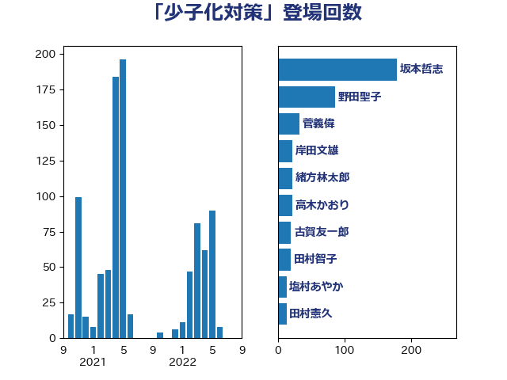

単語「少子化対策」

| 坂本哲志 | 自由民主党 | 178 回 |
| 野田聖子 | 自由民主党 | 86 回 |
| 菅義偉 | 自由民主党 | 32 回 |
| 岸田文雄 | 自由民主党 | 22 回 |
| 緒方林太郎 | 無所属 | 22 回 |
| 高木かおり | 日本維新の会 | 22 回 |
| 古賀友一郎 | 自由民主党 | 20 回 |
| 田村智子 | 日本共産党 | 20 回 |
| 塩村あやか | 立憲民主党 | 13 回 |
| 田村憲久 | 自由民主党 | 13 回 |
| 音喜多駿 | 日本維新の会 | 13 回 |
| 塩川鉄也 | 日本共産党 | 11 回 |
| 田島麻衣子 | 立憲民主党 | 11 回 |
| 麻生太郎 | 自由民主党 | 11 回 |
| 三ッ林裕巳 | 自由民主党 | 8 回 |
| 伊藤孝恵 | 国民民主党 | 8 回 |
| 西村康稔 | 自由民主党 | 7 回 |
| 阿部司 | 日本維新の会 | 7 回 |
| 後藤祐一 | 立憲民主党 | 6 回 |
| 杉尾秀哉 | 立憲民主党 | 6 回 |
| 柴田巧 | 日本維新の会 | 6 回 |
| 櫛渕万里 | れいわ新選組 | 6 回 |
| 足立康史 | 日本維新の会 | 6 回 |
| 住吉寛紀 | 日本維新の会 | 5 回 |
| 古屋範子 | 公明党 | 5 回 |
| 吉川赳 | 無所属 | 5 回 |
| 堤かなめ | 立憲民主党 | 5 回 |
| 小渕優子 | 自由民主党 | 5 回 |
| 高野光二郎 | 自由民主党 | 5 回 |
| 吉田久美子 | 公明党 | 4 回 |
| 吉田統彦 | 立憲民主党 | 4 回 |
| 松山政司 | 自由民主党 | 4 回 |
| 泉健太 | 立憲民主党 | 4 回 |
| 浅野哲 | 国民民主党 | 4 回 |
| 浜田聡 | NHK党 | 4 回 |
| 舞立昇治 | 自由民主党 | 4 回 |
| 金村龍那 | 日本維新の会 | 4 回 |
| 青山大人 | 立憲民主党 | 4 回 |
| 上田清司 | 国民民主党 | 3 回 |
| 中島克仁 | 立憲民主党 | 3 回 |
| 今井絵理子 | 自由民主党 | 3 回 |
| 伊藤岳 | 日本共産党 | 3 回 |
| 嘉田由紀子 | 無所属 | 3 回 |
| 国光あやの | 自由民主党 | 3 回 |
| 塩崎彰久 | 自由民主党 | 3 回 |
| 太田房江 | 自由民主党 | 3 回 |
| 宮路拓馬 | 自由民主党 | 3 回 |
| 山口那津男 | 公明党 | 3 回 |
| 末松信介 | 自由民主党 | 3 回 |
| 森屋宏 | 自由民主党 | 3 回 |
| 橋本聖子 | 無所属 | 3 回 |
| 田中健 | 国民民主党 | 3 回 |
| 田村まみ | 国民民主党 | 3 回 |
| 若松謙維 | 公明党 | 3 回 |
| 西岡秀子 | 国民民主党 | 3 回 |
| 越智隆雄 | 自由民主党 | 3 回 |
| 逢坂誠二 | 立憲民主党 | 3 回 |
| 中谷一馬 | 立憲民主党 | 2 回 |
| 今村雅弘 | 自由民主党 | 2 回 |
| 今枝宗一郎 | 自由民主党 | 2 回 |
| 小沼巧 | 立憲民主党 | 2 回 |
| 山田賢司 | 自由民主党 | 2 回 |
| 岡本あき子 | 立憲民主党 | 2 回 |
| 平林晃 | 公明党 | 2 回 |
| 打越さく良 | 立憲民主党 | 2 回 |
| 木原誠二 | 自由民主党 | 2 回 |
| 梅村聡 | 日本維新の会 | 2 回 |
| 森まさこ | 自由民主党 | 2 回 |
| 武見敬三 | 自由民主党 | 2 回 |
| 源馬謙太郎 | 立憲民主党 | 2 回 |
| 片山大介 | 日本維新の会 | 2 回 |
| 矢倉克夫 | 公明党 | 2 回 |
| 石井啓一 | 公明党 | 2 回 |
| 福島みずほ | 社会民主党 | 2 回 |
| 若宮健嗣 | 自由民主党 | 2 回 |
| 藤原崇 | 自由民主党 | 2 回 |
| 赤池誠章 | 自由民主党 | 2 回 |
| 阿部知子 | 立憲民主党 | 2 回 |
| 高市早苗 | 自由民主党 | 2 回 |
| おおつき紅葉 | 立憲民主党 | 1 回 |
| 一谷勇一郎 | 日本維新の会 | 1 回 |
| 上川陽子 | 自由民主党 | 1 回 |
| 中川郁子 | 自由民主党 | 1 回 |
| 伊藤渉 | 公明党 | 1 回 |
| 前原誠司 | 国民民主党 | 1 回 |
| 加藤勝信 | 自由民主党 | 1 回 |
| 和田義明 | 自由民主党 | 1 回 |
| 城井崇 | 立憲民主党 | 1 回 |
| 堀場幸子 | 日本維新の会 | 1 回 |
| 大島敦 | 立憲民主党 | 1 回 |
| 大西健介 | 立憲民主党 | 1 回 |
| 山下芳生 | 日本共産党 | 1 回 |
| 山田美樹 | 自由民主党 | 1 回 |
| 岡本三成 | 公明党 | 1 回 |
| 岸真紀子 | 立憲民主党 | 1 回 |
| 川崎ひでと | 自由民主党 | 1 回 |
| 川田龍平 | 立憲民主党 | 1 回 |
| 平木大作 | 公明党 | 1 回 |
| 後藤茂之 | 自由民主党 | 1 回 |
| 斉藤鉄夫 | 公明党 | 1 回 |
| 朝日健太郎 | 自由民主党 | 1 回 |
| 木村次郎 | 自由民主党 | 1 回 |
| 本田顕子 | 自由民主党 | 1 回 |
| 松川るい | 自由民主党 | 1 回 |
| 森田俊和 | 立憲民主党 | 1 回 |
| 櫻井充 | 自由民主党 | 1 回 |
| 櫻井周 | 立憲民主党 | 1 回 |
| 武井俊輔 | 自由民主党 | 1 回 |
| 江藤拓 | 自由民主党 | 1 回 |
| 池下卓 | 日本維新の会 | 1 回 |
| 沢田良 | 日本維新の会 | 1 回 |
| 玉木雄一郎 | 国民民主党 | 1 回 |
| 田嶋要 | 立憲民主党 | 1 回 |
| 竹内譲 | 公明党 | 1 回 |
| 竹谷とし子 | 公明党 | 1 回 |
| 自見はなこ | 自由民主党 | 1 回 |
| 藤田文武 | 日本維新の会 | 1 回 |
| 角田秀穂 | 公明党 | 1 回 |
| 金子恭之 | 自由民主党 | 1 回 |
| 長友慎治 | 国民民主党 | 1 回 |
| 長妻昭 | 立憲民主党 | 1 回 |
| 階猛 | 立憲民主党 | 1 回 |
| 青山周平 | 自由民主党 | 1 回 |
| 馬場雄基 | 立憲民主党 | 1 回 |
| 高木啓 | 自由民主党 | 1 回 |
| 高村正大 | 自由民主党 | 1 回 |